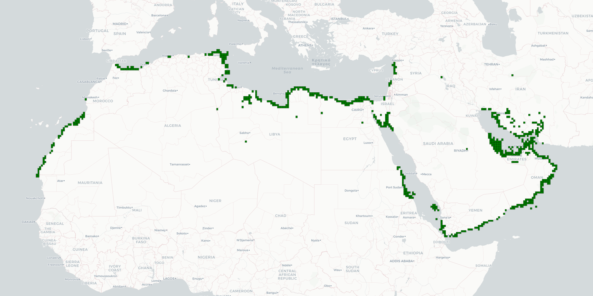

MarEA Stats Page

Site Documentation
MarEA Sites
1496
MarEA Grids
99
Total MarEA Sites
22752
Total MarEA Grids
749
Disturbance Cause Analysis
Egypt
Based on reports of 511 sites, in 40 grids, by Julia Nikolaus, Mohamed Osman, Mohamed Kenawi, Mohamed Ashmawy
Disturbance Causes
Saudi Arabia
Based on reports of 770 sites, in 9 grids, by Rodrigo Ortiz-Vazquez
Disturbance Causes
Morocco
Based on reports of 39 sites, in 4 grids, by Nick Ray, Julia Nikolaus
Disturbance Causes
Algeria
Based on reports of 29 sites, in 8 grids, by Jen Makovics, Nick Ray
Disturbance Causes
Iran (Islamic Republic of)
Based on reports of 34 sites, in 9 grids, by Mohamed Osman
Disturbance Causes
Libya
Based on reports of 95 sites, in 18 grids, by Julia Nikolaus, Nichole Sheldrick
Disturbance Causes
Palestine, State of
Based on reports of 1 sites, in 1 grids, by Mohammad Jaradat, Georgia Andreou, Michael Fradley